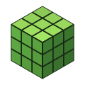

Cubica – מדיניות פרטיותCubica הוא משחק קוביות חינמי שרץ בדפדפן, בכתובת playcubica.github.io.
בלי חשבון
אפשר לשחק בלי להתחבר. העולמות, השם וההגדרות נשמרים רק בדפדפן שלך (IndexedDB ו-localStorage), ושום מידע לא נשלח אלינו.
התחברות עם Google (לא חובה)
אם בוחרים להתחבר, Google משתפת עם המשחק את השם, כתובת המייל ותמונת הפרופיל שלך. אנחנו משתמשים בהם רק כדי:
- להציג לך באיזה חשבון התחברת;
- לשמור את העולמות שלך בענן (Google Firebase), כך שאפשר להמשיך מכל מחשב;
- להראות לחברים שמשחקים איתך שזה באמת את/ה (סימן ✓ ליד השם).
המייל שלך לא מוצג לשחקנים אחרים ולא נמסר לאף אחד. רק החשבון שלך יכול לקרוא ולכתוב את העולמות שלך בענן. אנחנו לא משתמשים במידע לפרסום ולא מוכרים אותו.
משחק עם חברים
במשחק משותף המחשבים מתחברים ישירות זה לזה (WebRTC). שרת ציבורי של PeerJS עוזר להם רק למצוא זה את זה. השם שבחרת במשחק מוצג לשחקנים באותו עולם.
מחיקה
אפשר למחוק עולם (גם מהענן) בתפריט "טען עולם". להתנתקות לוחצים "התנתק". כדי לנתק את הגישה של המשחק לחשבון Google: myaccount.google.com/connections. לבקשה למחוק את כל הנתונים שלך מהענן, פתחו בקשה בעמוד GitHub של המשחק.
Privacy (English)
Cubica is a free browser game. Without signing in, everything stays in your browser. If you choose to sign in with Google, the game receives your name, email address and profile picture and uses them only to show which account you are using, to save your worlds in Google Firebase so you can continue on any device, and to show friends a verified mark next to your name. Your email is never shown to other players or shared, only your account can access your cloud worlds, and nothing is used for advertising or sold. You can delete worlds in the game, sign out at any time, and revoke access at myaccount.google.com/connections. To have all your cloud data deleted, open an issue on the game's GitHub page.